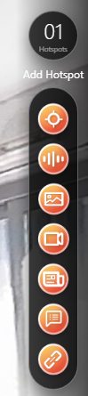

¿Qué es un hotspot?
Si las imágenes panorámicas de 360° son el esqueleto de nuestro tour virtual, los Hotspots (puntos de interés) son el corazón y los músculos.
Un Hotspot es un marcador visual o "botón flotante" interactivo que podemos arrastrar y colocar en cualquier coordenada espacial de nuestra fotografía de 360°. Su función principal es servir de puente entre el usuario y el entorno, permitiéndole realizar acciones al hacer clic o pasar el cursor por encima de él.
Sin los hotspots, un tour virtual sería simplemente una galería de fotos fijas para mirar. Gracias a ellos, podemos transformar una imagen plana en una experiencia dinámica donde el visitante puede explorar a su propio ritmo, investigar objetos, leer descripciones, escuchar explicaciones o desplazarse de una habitación a otra como si caminara físicamente por el edificio.
🛠️ ¿Cómo se añade un Hotspot en Lapentor?
 |
El proceso en el editor es sumamente intuitivo:
|